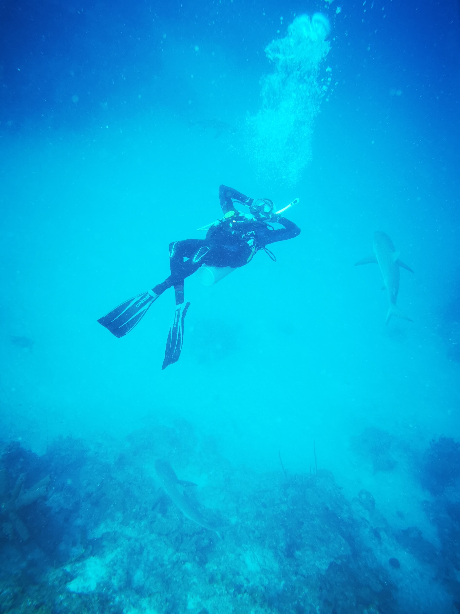

Hey! My name is Juan Diego Méndez, I am an international student from Colombia studying Computer Science at the University of Texas at Austin. I am driven by a passion for technology and innovation and am focused on extended reality (XR) technologies like augmented reality (AR), virtual reality (VR), and mixed reality (MR).
As a student, I am eager to obtain hands-on experience in my field. I completed my last internship at MonkeyFlux, a digital marketing company. I improved front-end functionality by addressing code issues, implementing new features, and debugging in TypeScript, HTML and CSS.